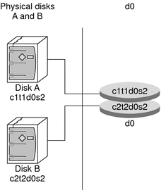

|
|||||||||||||||||||||||||||||||||||||||
|
1. Getting Started With Solaris Volume Manager 2. Storage Management Concepts 3. Solaris Volume Manager Overview What's New in Solaris Volume Manager Introduction to Solaris Volume Manager How to Administer Solaris Volume Manager How to Access the Solaris Volume Manager Graphical User Interface (GUI) Solaris Volume Manager Requirements Solaris Volume Manager Configuration Guidelines Overview of Creating Solaris Volume Manager Components Overview of Multi-Terabyte Support in Solaris Volume Manager Upgrading to Solaris Volume Manager 4. Solaris Volume Manager for Sun Cluster (Overview) 5. Configuring and Using Solaris Volume Manager (Scenario) 8. RAID-0 (Stripe and Concatenation) Volumes (Overview) 9. RAID-0 (Stripe and Concatenation) Volumes (Tasks) 10. RAID-1 (Mirror) Volumes (Overview) 11. RAID-1 (Mirror) Volumes (Tasks) 12. Soft Partitions (Overview) 16. Hot Spare Pools (Overview) 20. Maintaining Solaris Volume Manager (Tasks) 21. Best Practices for Solaris Volume Manager 22. Top-Down Volume Creation (Overview) 23. Top-Down Volume Creation (Tasks) 24. Monitoring and Error Reporting (Tasks) 25. Troubleshooting Solaris Volume Manager (Tasks) A. Important Solaris Volume Manager Files B. Solaris Volume Manager Quick Reference |
Overview of Solaris Volume Manager ComponentsThe five basic types of components that you create with Solaris Volume Manager are volumes, soft partitions, disk sets, state database replicas, and hot spare pools. The following table gives an overview of these Solaris Volume Manager features. Table 3-1 Summary of Solaris Volume Manager Features
Overview of VolumesA volume is a group of physical slices that appears to the system as a single, logical device. Volumes are actually pseudo, or virtual, devices in standard UNIX® terms. Note - Historically, the Solstice DiskSuiteTM product referred to these logical devices as metadevices. However, for simplicity and standardization, this book refers to these devices as volumes. Classes of VolumesYou create a volume as a RAID-0 (concatenation or stripe) volume, a RAID-1 (mirror) volume, a RAID-5 volume, . You can use either the Enhanced Storage tool within the Solaris Management Console or the command-line utilities to create and administer volumes. The following table summarizes the classes of volumes. Table 3-2 Classes of Volumes
How Volumes Are UsedYou use volumes to increase storage capacity, performance, and data availability. In some instances, volumes can also increase I/O performance. Functionally, volumes behave the same way as slices. Because volumes look like slices, the volumes are transparent to end users, applications, and file systems. As with physical devices, volumes are accessed through block or raw device names. The volume name changes, depending on whether the block or raw device is used. See Volume Names for details about volume names. You can use most file system commands, including mkfs, mount, umount, ufsdump, ufsrestore, and others, on volumes. You cannot use the format command, however. You can read, write, and copy files to and from a volume, as long as the volume contains a mounted file system. Example—Volume That Consists of Two SlicesFigure 3-2 shows a volume that contains two slices, one slice from Disk A and one slice from Disk B. An application or UFS treats the volume as if it were one physical disk. Adding more slices to the volume increases its storage capacity. Figure 3-2 Relationship Among a Volume, Physical Disks, and SlicesVolume and Disk Space Expansion Using the growfs CommandSolaris Volume Manager enables you to expand a volume by adding additional slices. You can use either the Enhanced Storage tool within the Solaris Management Console or the command-line interface to add a slice to an existing volume. You can expand a mounted or unmounted UFS file system that is contained within a volume without having to halt or back up your system. Nevertheless, backing up your data is always a good idea. After you expand the volume, use the growfs command to grow the file system. Note - After a file system has been expanded, the file system cannot be reduced in size. The inability to reduce the size of a file system is a UFS limitation. Similarly, after a Solaris Volume Manager partition has been increased in size, it cannot be reduced. Applications and databases that use the raw volume must have their own method to “grow” the added space so that applications can recognize it. Solaris Volume Manager does not provide this capability. You can expand the disk space in volumes in the following ways:
The growfs command expands a UFS file system without loss of service or data. However, write access to the volume is suspended while the growfs command is running. You can expand the file system to the size of the slice or the volume that contains the file system. The file system can be expanded to use only part of the additional disk space by using the -s size option to the growfs command. Note - When you expand a mirror, space is added to the mirror's underlying submirrors. The growfs command is then run on the RAID-1 volume. The general rule is that space is added to the underlying devices, and the growfs command is run on the top-level device. Volume NamesAs with physical slices, volumes have logical names that appear in the file system. Logical volume names have entries in the /dev/md/dsk directory for block devices and the /dev/md/rdsk directory for raw devices. Instead of specifying the full volume name, such as /dev/md/dsk/volume-name, you can often use an abbreviated volume name, such as d1, with any meta* command. You can generally rename a volume, as long as the volume is not currently being used and the new name is not being used by another volume. For more information, see Exchanging Volume Names. Originally, volume names had to begin with the letter “d” followed by a number (for example, d0). This format is still acceptable. The following are examples of volume names that use the “d*” naming construct:
Beginning with the Solaris Express 4/06 release, Solaris Volume Manager has been enhanced to include the use of descriptive names for naming volumes and hot spare pools. A descriptive name for a volume is a name that can be composed of a combination of the following:
Descriptive names must begin with a letter. The words “all” and “none” are reserved and cannot be used as names for volumes or hot spare pools. You also cannot use only a “.” (period) or “..” (two periods) as the entire name. Finally, you cannot create a descriptive name that looks like a physical disk name, such as c0t0d0s0. As noted previously, you can also continue to use the “d*” naming convention. The following are examples of descriptive volume names:
When descriptive names are used in disk sets, each descriptive name must be unique within that disk set. Hot spare pools and volumes within the same disk set cannot have the same name. However, you can reuse names within different disk sets. For example, if you have two disk sets, one disk set called admins and one disk set called managers, you can create a volume named employee_files in each disk set. The functionality of the Solaris Volume Manager commands that are used to administer volumes with descriptive names remains unchanged. You can substitute a descriptive name in any meta* command where you previously used the “d*” format. For example, to create a single-stripe volume of one slice with the name employee_files, you would type the following command at the command line: # metainit employee_files 1 1 c0t1d0s4 If you create volumes and hot spare pools using descriptive names and then later determine that you need to use Solaris Volume Manager under previous releases of the Solaris OS, you must remove the components that are defined with descriptive names. To determine if the Solaris Volume Manager configuration on your system contains descriptive names, you can use the -D option of the metastat command. The metastat -D command lists volumes and hot spare pools that were created using descriptive names. These components must be removed from the Solaris Volume Manager configuration before the remaining configuration can be used with a release prior to the Solaris Express 4/06 release. If these components are not removed, the Solaris Volume Manager in these prior Solaris releases does not start. For more information about the -D option, see the metastat(1M) man page. For information about removing components from a configuration, see Removing RAID-1 Volumes (Unmirroring) and Removing a RAID-0 Volume. Volume Name GuidelinesThe use of a standard for your volume names can simplify administration and enable you at a glance to identify the volume type. Here are a few suggestions:
State Database and State Database ReplicasThe state database is a database that stores information about the state of your Solaris Volume Manager configuration. The state database records and tracks changes made to your configuration. Solaris Volume Manager automatically updates the state database when a configuration or state change occurs. Creating a new volume is an example of a configuration change. A submirror failure is an example of a state change. The state database is actually a collection of multiple, replicated database copies. Each copy, referred to as a state database replica, ensures that the data in the database is always valid. Multiple copies of the state database protect against data loss from single points-of-failure. The state database tracks the location and status of all known state database replicas. Solaris Volume Manager cannot operate until you have created the state database and its state database replicas. A Solaris Volume Manager configuration must have an operating state database. When you set up your configuration, you can locate the state database replicas on either of the following:
Solaris Volume Manager recognizes when a slice contains a state database replica, and automatically skips over the replica if the slice is used in a volume. The part of a slice reserved for the state database replica should not be used for any other purpose. You can keep more than one copy of a state database on one slice. However, you might make the system more vulnerable to a single point-of-failure by doing so. The Solaris operating system continues to function correctly if all state database replicas are deleted. However, the system loses all Solaris Volume Manager configuration data if a reboot occurs with no existing state database replicas on disk. Hot Spare PoolsA hot spare pool is a collection of slices (hot spares) reserved by Solaris Volume Manager to be automatically substituted for failed components. These hot spares can be used in either a submirror or RAID-5 volume. Hot spares provide increased data availability for RAID-1 and RAID-5 volumes. You can create a hot spare pool with either the Enhanced Storage tool within the Solaris Management Console or the command-line interface. When component errors occur, Solaris Volume Manager checks for the first available hot spare whose size is equal to or greater than the size of the failed component. If found, Solaris Volume Manager automatically replaces the component and resynchronizes the data. If a slice of adequate size is not found in the list of hot spares, the submirror or RAID-5 volume is considered to have failed. For more information, see Chapter 16, Hot Spare Pools (Overview). Disk SetsA disk set is a set of physical storage volumes that contain logical volumes and hot spares. Volumes and hot spare pools must be built on drives from within that disk set. Once you have created a volume within the disk set, you can use the volume just as you would a physical slice. A disk set provides data availability in a clustered environment. If one host fails, another host can take over the failed host's disk set. (This type of configuration is known as a failover configuration.) Additionally, disk sets can be used to help manage the Solaris Volume Manager namespace, and to provide ready access to network-attached storage devices. For more information, see Chapter 18, Disk Sets (Overview). |
||||||||||||||||||||||||||||||||||||||
|